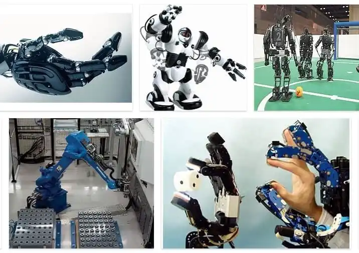

Las características de la robótica pueden variar dependiendo del tipo de robot, su aplicación y su diseño específico. Sin embargo, algunas características comunes de la robótica incluyen:
- Automatización:Los robots están diseñados para realizar tareas de manera automatizada, sin la necesidad de intervención humana constante.
- Programabilidad: Los robots pueden ser programados para realizar secuencias de movimientos y acciones específicas, lo que les permite adaptarse a diferentes tareas y entornos.
- Precisión y repetitividad: Los robots pueden ejecutar movimientos y procesos con una alta precisión y repetitividad, lo que les permite realizar tareas de manera uniforme y consistente.
- Flexibilidad: Muchos robots modernos son diseñados con una gran flexibilidad, lo que les permite adaptarse a diferentes aplicaciones y entornos de trabajo.
- Rapidez:Los robots pueden operar a velocidades mucho más altas que los seres humanos, lo que les permite realizar tareas de manera más rápida y eficiente.
- Capacidad de carga: Los robots industriales pueden manejar cargas pesadas y realizar tareas que serían difíciles o peligrosas para los humanos.
- Seguridad:Los robots pueden trabajar en entornos peligrosos o poco propicios para los humanos, como altas temperaturas, ambientes tóxicos o en operaciones de alto riesgo.
- Reducción de errores: Gracias a su precisión y repetitividad, los robots pueden reducir significativamente los errores humanos en tareas repetitivas o de alta complejidad.
- Conectividad: Muchos robots modernos están diseñados para integrarse y comunicarse con otros sistemas y dispositivos, lo que les permite formar parte de sistemas más amplios y complejos.
- Capacidad de aprendizaje: Algunos robots avanzados pueden "aprender" de sus experiencias y mejorar su desempeño a través del tiempo.
